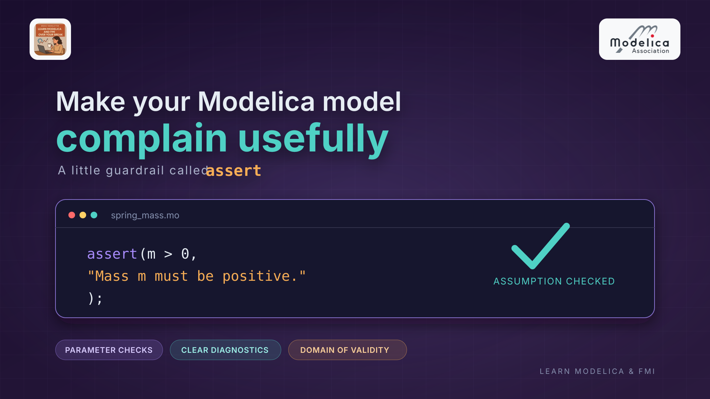

Make your Modelica model complain usefully: assert

(1/4) This is the first of four connected articles about making Modelica models clearer and easier to share and use.
I hope you’ve got your preferred drink in hand ☕️🫖💧
Remember how we talked about developing a model for a purpose—and for a given experimental frame, or domain of validity? A model can be useful within that frame and misleading - or even wrong! - outside it. So how do we stop someone (including future-you) from using it in a way it was never meant to be used? Modelica gives us several ways to put guardrails around some of those assumptions. One of them is assert. Let’s dig in!
A guardrail, not a force field
In article 032, we talked about how a model is useful for a purpose and within its domain of validity. But that knowledge often lives in the model author’s head—or, if we’re lucky, in a comment or, better, in the model documentation. Share the model with a colleague, and those assumptions don’t necessarily make the trip. What if the model could check some of them for us?
That’s where Modelica’s assert comes in. It checks a Boolean condition; if the condition is true, everything carries on. If it’s false, the model raises an assertion with a message explaining what assumption was violated. The default level is AssertionLevel.error: the current evaluation is aborted. A solver may retry—for example, with a smaller integration step—but if the failure cannot be resolved, the simulation fails. For a fixed invalid parameter, retrying is obviously useless. 😉
initial equation
assert(m > 0, "Mass m must be positive.");Here, the assertion spells out a simple rule: this component only makes sense for a positive mass. The message matters—assert(false, "Nope") may technically stop a run, but it doesn’t help anyone understand why. (Future-you deserves better.)
But stopping isn’t always what we want. The optional third argument, level, can be set to AssertionLevel.warning: when the condition is false, the tool reports a warning without aborting the evaluation, so the simulation can continue. Use an error for a hard limit of the model, and a warning when continuing is still meaningful but the user should know they have left a recommended operating range. We’ll try that on the oscillator below.
An assertion is a guardrail, not a proof that the model is correct. It can check selected assumptions we choose to encode; it can’t establish that every result is physically valid across the model’s entire domain. Let’s put that guardrail on a small component and see what happens with sensible and nonsensical parameter values.
Add guardrails to a small component
Let’s bring back the SuspendedMass model we coded in article 017 and later included in our library: a mass suspended on a damped spring, under gravity. No need to invent another oscillator (we have enough of those already 😅). We want to hand this one over to a colleague, and we’ll keep it as our travelling companion through the four articles, improving how someone else can configure and use it.
We keep its equations, parameter names and default values. We specify the initial position at the spring’s rest length and zero initial velocity, then add checks for positive mass and stiffness, and nonnegative damping. Here, k is the spring stiffness and c is the damping constant.
Note that for parameters, a cleaner way would be to work with the
minandmaxattributes directly in the parameter declaration, rather than using assertions. However, many tools might not check these consistently and here we want to make sure that these conditions are enforced at runtime.
model SuspendedMass "Suspended mass on a damped spring"
import Modelica.Units.SI;
import Modelica.Constants.g_n;
parameter SI.Mass m = 10 "Mass of the suspended body";
parameter SI.TranslationalSpringConstant k = 1000 "Spring stiffness";
parameter SI.Length L0 = 1 "Rest length of the spring";
parameter SI.TranslationalDampingConstant c = 30 "Damping constant";
SI.Position x "Position of the mass";
SI.Velocity v "Velocity of the mass";
SI.Acceleration a "Acceleration of the mass";
initial equation
x = L0;
v = 0;
assert(m > 0, "Mass m must be positive.");
assert(k > 0, "Spring stiffness k must be positive.");
assert(c >= 0, "Damping constant c must be nonnegative.");
equation
a = -c/m * v - k/m * (x - L0) - g_n;
a = der(v);
v = der(x);
end SuspendedMass;The equations describe the same suspended mass; the assertions don’t change its physics. They make our assumptions explicit: m and k must be strictly positive, and c must be nonnegative. Zero damping is allowed—it gives us the undamped case. If someone sets a parameter to a value that violates these assumptions, the model reports which assumption was broken instead of leaving them to infer it from a later failure.
Notice where I put the checks: in
initial equation, not the regularequationsection. Since these parameters stay fixed during a simulation, I recommend checking their validity during initialization rather than asking for ongoing checks. That makes the intent clear; it doesn’t mean “exactly one evaluation,” because initialization itself may involve iterations. A tool may also optimize parameter-only assertions placed inequation, so this is a recommendation about placement, not a guaranteed speedup.
We’ve now made the rules visible. Next, let’s try the model once with valid parameters and then deliberately break a rule to see the difference in the diagnostic.
Try a valid case—and then break a rule
With the default parameters, SuspendedMass has a positive mass and stiffness, and nonnegative damping, so the assertions pass and the oscillator can be simulated as usual. We can also make the valid setup explicit at the point where we instantiate the component:
model ValidExample
SuspendedMass oscillator(m = 10, k = 1000, L0 = 1, c = 30);
end ValidExample;Now let’s give it a negative mass:
model InvalidExample
SuspendedMass oscillator(m = -10, k = 1000, L0 = 1, c = 30);
end InvalidExample;The equations may still describe a mathematical system, but not the ordinary physical spring–mass component we intended. The assert(m > 0, ...) catches that violated assumption, and the tool reports the message instead of presenting the resulting simulation as if it were meaningful. The exact diagnostic formatting can vary by Modelica tool, but the useful part is that the message points straight to the assumption we encoded.
That’s the practical win: assertions can catch an invalid setup even when it isn’t an obvious syntax error or a dramatic solver crash.
What if the boundary can be crossed during simulation?
Assertions aren’t limited to parameters. You can also check a variable that changes over time—such as our oscillator’s position x. Suppose the colleague using this model has a recommended excursion range, measured from the spring’s rest position L0. The ideal spring equations still work beyond it, but we want to flag that the intended operating range has been exceeded.
Add a parameter to SuspendedMass to describe that range:
parameter SI.Length xWarning = 0.2
"Recommended maximum absolute displacement from the spring rest position";Then add the following checks to its respective sections:
initial equation
assert(xWarning > 0, "Displacement warning limit xWarning must be positive.");
equation
assert(abs(x - L0) <= xWarning,
"Oscillator displacement is outside the recommended operating range.",
level = AssertionLevel.warning);The limit itself is a parameter, so its positivity check belongs in initial equation. But x changes during the simulation: its range check belongs in equation, so it remains active beyond initialization. Putting that check only in initial equation would tell us whether the starting position is acceptable—not whether the oscillator crosses the limit later.
The mass starts at x = L0, so the displacement we check is initially zero. Gravity then pulls the mass downward. As we calculated in article 018, the equilibrium is x = L0 - m*g_n/k: with our defaults, about 0.098 m below the spring’s rest position.
With the default xWarning = 0.2 (in meters), this simulation stays within the recommended range. To deliberately trigger the warning, change xWarning to 0.08 (in meters). The mass starts within that range, but gravity pulls it beyond the limit during simulation. The assertion then warns without stopping the run. The warning is about the chosen operating range, not a claim that the spring equations suddenly become mathematically invalid (maybe the spring is just being stretched more than recommended and a linear approximation is no longer accurate).
There is a simulation-time trade-off. Checks on time-varying variables may need repeated evaluation, and many checks—or expensive conditions—can add significant overhead. A simple comparison is not automatically expensive, and the actual cost depends on the model and the tool.
My recommendation: check the “usual suspects”: if a user provides a negative mass I would be worried about much more than just a model misuse… 😅 on the other hand, if you have a hydraulic model for which the oil model is only verified between 2 and 80 degrees Celsius, make sure to assert that the temperature stays within that range. Then keep to a minimum the checks that must remain active during simulation in the
equationsection or place them within a if-statement that only triggers under specific conditions (e.g. a debug mode).
Keep the useful guardrails, but don’t make the solver carry a whole motorway barrier around. 😅
Guardrails are useful—but they are not the whole fence
Our checks cover a few explicit assumptions and a recommended operating range. Real models have limits that can depend on much more: the intended experiment, the input range, the data used to fit a component, or physics that the equations deliberately leave out. A few assert statements cannot certify that every output is valid throughout that entire domain.
So where should you use them? Put an assertion close to the component that owns the assumption, and make its message tell the user what needs to change. A message like “Mass m must be positive” is much more actionable than “Invalid parameter” (which is technically true, but about as helpful as a smoke alarm that only says “something is wrong”).
And keep the distinction clear: an assertion checks a condition you have chosen to encode; it does not replace the equations, careful parameterization, or validation against the experiment the model is meant to represent. Think of it as a guardrail at a known boundary—not a certificate that the road goes everywhere. Assertions do not count toward the equation balance—remember that we need a square system of equations?
A quick checklist before you add one
Before writing an assert, ask yourself:
- What assumption does this component truly rely on? Check that—not every preference you can think of.
- Can the model evaluate the condition clearly? Keep it focused on a definite Boolean rule, such as
m > 0. - Will the message help someone fix the setup? Name the parameter or condition, and say what is expected.
- Should a violation stop the run or warn the user? Keep the default error level for hard limits; use
AssertionLevel.warningwhen continuing is still meaningful. - When does the condition need checking? Use
initial equationfor fixed parameter assumptions andequationfor conditions that must hold throughout the simulation. - Is this really a validity boundary? Don’t reject a legitimate operating case just because it is unusual.
For our suspended mass, positive mass and stiffness, and nonnegative damping, are clear assumptions, so they make useful guardrails. (Yet, honestly, I would not write these asserts on the model because they are so obvious.) The broader domain of validity still comes from the purpose of the model and how we validate it—not from a handful of assertions.
The END for today
Enough for today. Pick one component you use often and ask: what assumptions does it quietly make? Could one clear assert help the next person use it safely?
Next time, we’ll share this oscillator as an FMU. Our colleague wants to configure it and read its motion—but what interface did we actually give them? We’ll inspect the FMU’s metadata to find out.
Break is over, go back to what you were doing.
Clem
Next ->
© 2025-2026 Clément Coïc — Licensed under creative commons 4.0. Non-commercial use only.